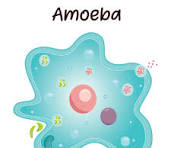
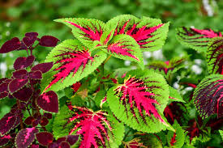

amphibians e.g toad
reptiles e.g lizard


skin
liver
lungs

Excretion is defined as the process by which waste products of metabolism are removed from the body of living things.
waste produts from metabolic activities are always produced by the body and their removal are carried out by special excretory systems or organs.
Excretory systems or organs of some animal
| images | organism | excretory organ | waste products excreted |
|---|---|---|---|
|  | protozoa e.g amoeba | contractile vacuole | carbondioxide, ammonia and water |
| flatworms e.g tapeworm | flame cells | carbondioxide,ammonia and water | |
| annelida e.g earthworm | nephrida | water,carbondioxide,urea and ammonia | |
| insets | malphigian tubule | water,carbondioxide and uric acid | |
| crustaceans e.g crab | green glands | water,urea,carbondioxide,salt and ammonia | |
| fishes e.g tilipia, amphibians e.g toad reptiles e.g lizard |
kidneys | urine containing urea, salts, water,hormones and uric acid | |
|
birds | kidney and lungs | carbondioxide and water vapour |
|
mammals | kidney skin liver lungs |
water, mineral salt, urea and uric acid |
|  | flowering plants | stomata and lenticels | water, carbondioxide and oxygen |
|
bark of trees | stomata and lenticels | tannis, mucilage,gum crystals,anthocyanin,alkaloid,resin oil and latex |